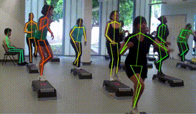
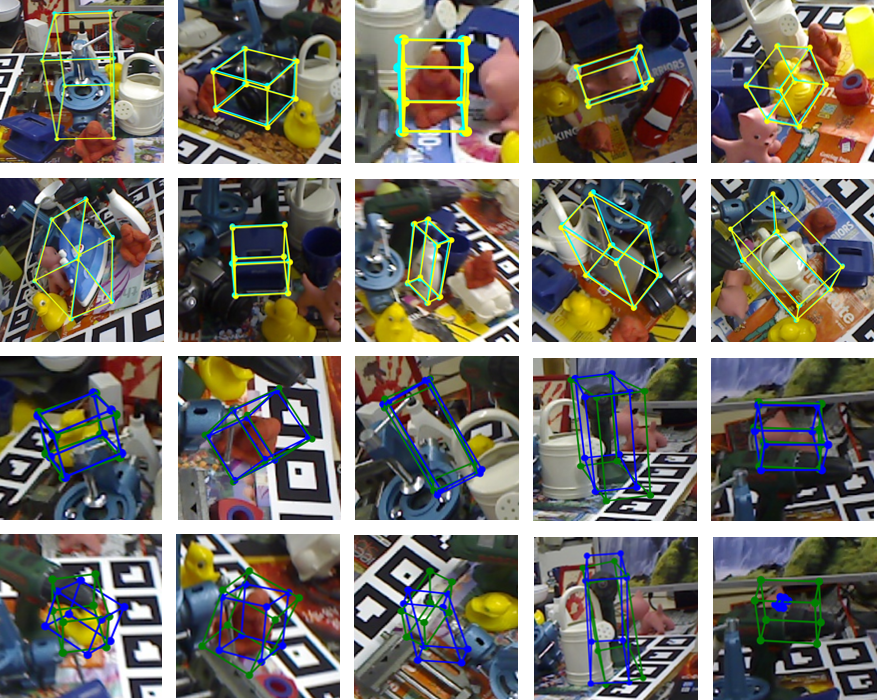
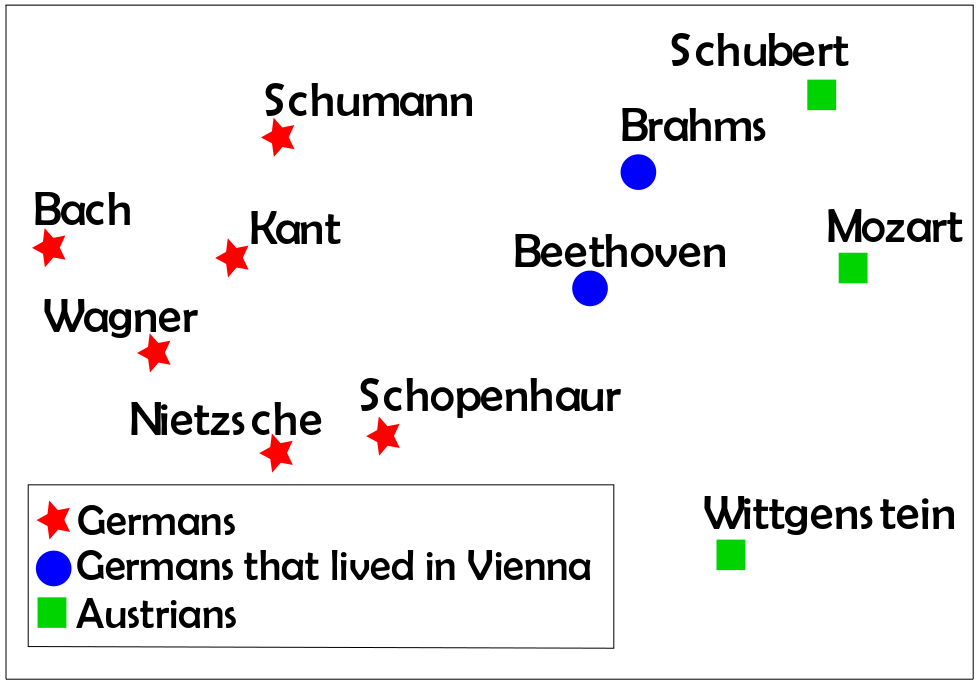

My Résumé
Greetings! I am an undergraduate student at Shanghai Jiao Tong University (上海交通大学), majoring in Information Engineering.
Currently, I am working on undergraduate thesis on load balancing in datacenter networks with deep reinforcement learning under the supervision of Prof. Lingge Jiang. I was a visiting student of the Natural Language Processing group at UCSB in the summer of 2018, advised by Prof. William Wang and mentored by Dr. Vivek Kulkarni. I did most of my undergrad research at the Machine Vision and Intelligence Group at SJTU, advised by Prof. Cewu Lu. I was also a research assistant at the National Engineering Laboratory for Information Content Analysis Technology at SJTU, advised by Prof. Shenghong Li.
I am interested in applying machine learning algorithms to problems in Computer Vision, Natural Language Processing and Computer Networks. My ultimate academic goal is to design algorithms that are as cognitively capable as human beings in every meaningful dimensions.
Research Projects
-
Human Pose Tracking: A new method for multi-person pose tracking with spatio-temporal information
-
6D Object Pose Estimation: A novel architecture of detecting 3D model instance and estimating 6D pose under occlusion
-
Knowledge Graph Embedding: A new knowledge graph embedding algorithm that captures contextual cues and dependencies among entities and relations
Publications
1. Pose Flow: Efficient Online Pose Tracking, BMVC 2018
Yuliang Xiu *, Jiefeng Li *, Haoyu Wang, Yinghong Fang, and Cewu Lu.

2. Estimating 6D Pose From Localizing Designated Surface Keypoints, ICCV 2019 submission
Zelin Zhao, Haoyu Wang *, Gao Peng *, Haoshu Fang, Chengkun Li, and Cewu Lu.

3. DOLORES: Deep Contextualized Knowledge Graph Embeddings, ACL 2019 submission
Haoyu Wang, Vivek Kulkarni, and William Yang Wang.

(* indicates equal contribution)
Short-term Programs
-
EE Summer Intensive Program, University of Washington, Seattle, USA, 2016
-
Winter International Student Experience, Sungkyunkwan University (성균관대학교), Seoul, Korea, 2019
Recreation
-
Piano: started to play at the age of 4
-
Tennis: served as President of Tennis Association at SJTU in 2016
You can use the editor on GitHub to maintain and preview the content for your website in Markdown files.